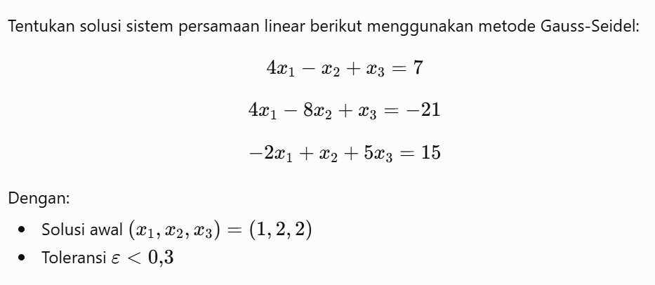
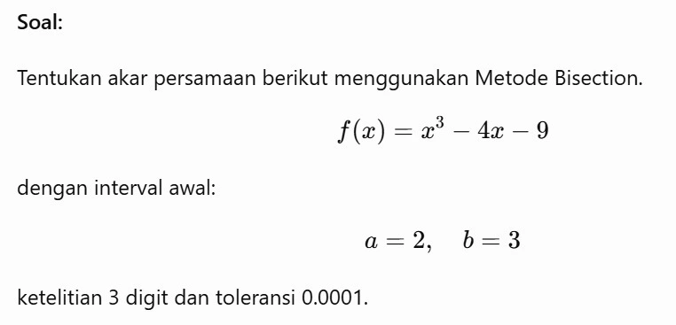
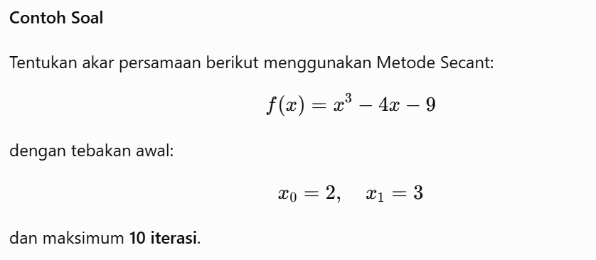
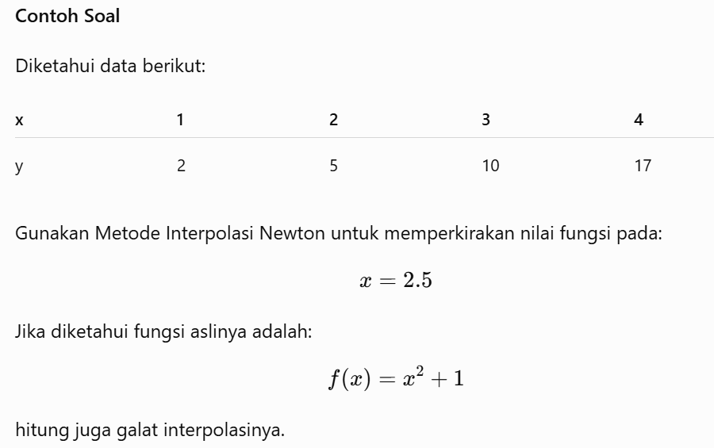
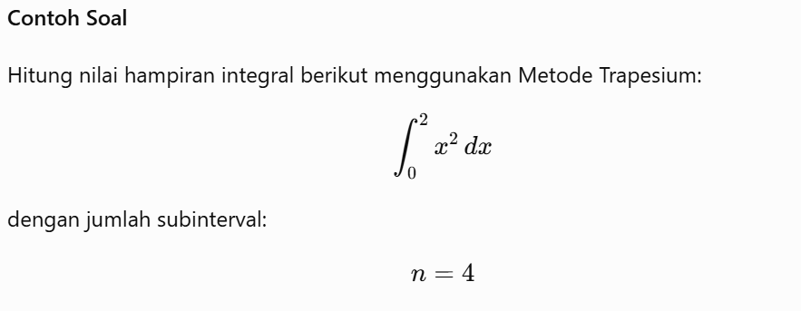
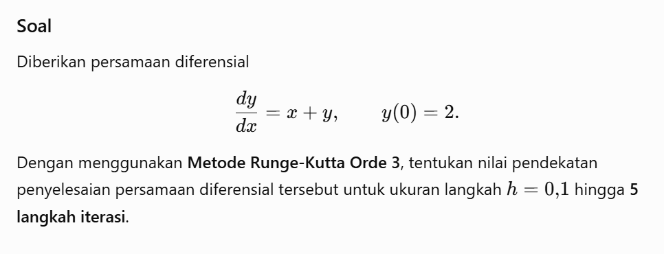

Contoh SPL tiga variabel menggunakan metode Gauss-Seidel dengan solusi
awal (1, 2, 2) dan toleransi 0,3.

Cara Kerja Kalkulator Metode Gauss-Seidel
Masukkan matriks augmented sistem persamaan linear (SPL), nilai toleransi (ε), jumlah iterasi maksimum, dan tebakan awal (opsional).
Ubah setiap persamaan ke bentuk iterasi:
xᵢ = (bᵢ − Σaᵢⱼxⱼ) / aᵢᵢ
Hitung nilai x₁, x₂, ..., xₙ secara berurutan menggunakan nilai terbaru yang diperoleh pada iterasi yang sama.
Hitung galat relatif setiap variabel:
Ex = |(xbaru − xlama) / xbaru|
Ulangi proses hingga seluruh galat memenuhi Ex < ε atau jumlah iterasi maksimum tercapai. Nilai iterasi terakhir menjadi solusi hampiran SPL.
Contoh Inputan Gauss-Seidel
Tentukan jumlah variabel, klik Buat Matriks, lalu isi nilai matriks.
Solusi awal, toleransi (ε), dan iterasi bersifat opsional.
Format Input
Kolom 1 | Kolom 2 | Kolom 3 | Konstanta
Baris 1 : 4 | -1 | 1 | 7
Baris 2 : 4 | -8 | 1 | -21
Baris 3 : -2 | 1 | 5 | 15
------------------------------------------------
Solusi Awal : 1 | 2 | 2 |
Toleransi : 0.03
Iterasi : 50
Catatan:
Toleransi(ε) (Opsional) → Jika kosong menggunakan nilai default 0.0001
Maksimum Iterasi (Opsional) → Jika kosong menggunakan nilai default 50
Solusi Awal (Opsional) → Jika kosong menggunakan nilai awal (0,0,...,0)
Metode Bisection
Contoh pencarian akar persamaan menggunakan metode Bisection dengan interval awal a = 2 dan
b = 3, ketelitian 3 digit, serta toleransi 0.0001.

Cara Kerja Kalkulator Metode Bisection
Masukkan fungsi f(x), batas bawah a,
batas atas b, toleransi (ε), dan jumlah iterasi maksimum.
Sistem memvalidasi bahwa f(a) dan f(b) memiliki tanda
berbeda. Jika salah satu batas menghasilkan f(x)=0, maka akar
eksak langsung ditemukan.
Hitung titik tengah selang menggunakan:
c = (a + b)/2,
kemudian evaluasi nilai f(a), f(c), dan f(b).
Tentukan selang baru berdasarkan perubahan tanda:
f(a) × f(c) < 0 → b = c f(a) × f(c) > 0 → a = c.
Hitung estimasi galat menggunakan:
|b − c|,
kemudian ulangi proses hingga galat memenuhi toleransi,
akar eksak ditemukan, atau jumlah iterasi maksimum tercapai.
Sistem menampilkan nilai hampiran akar, nilai fungsi pada akar,
estimasi galat, dan jumlah iterasi yang dilakukan.
Contoh Inputan Bisection
Isi fungsi f(x), interval a dan b, ketelitian, serta toleransi.
Format Input
Fungsi f(x) : x^3-4*x-9
a : 2
b : 3
Ketelitian : 3
Toleransi : 0.0001
Catatan:
- f(a) dan f(b) harus memiliki tanda berbeda
- Ketelitian (opsional): jumlah digit desimal hasil, default 3 digit
- Toleransi (opsional): batas galat iterasi, default 0.0001
Metode Secant
Contoh pencarian akar persamaan menggunakan metode Secant dengan tebakan awal x₀ = 2 dan x₁
= 3, serta maksimum 10 iterasi.

Cara Kerja Kalkulator Metode Secant
Masukkan fungsi f(x), tebakan awal x₀,
x₁, dan jumlah iterasi maksimum.
Sistem melakukan validasi data masukan, kemudian menghitung
nilai f(x₀) dan f(x₁).
Hitung pendekatan akar berikutnya menggunakan rumus Secant:
x₂ = x₁ − [f(x₁)(x₁ − x₀)] / [f(x₁) − f(x₀)].
Hitung galat absolut menggunakan:
|x₂ − x₁|.
Perbarui nilai dengan
x₀ = x₁ dan
x₁ = x₂,
kemudian ulangi proses hingga galat lebih kecil dari toleransi
atau jumlah iterasi maksimum tercapai.
Sistem menampilkan akar hampiran, nilai fungsi pada akar,
galat akhir, jumlah iterasi, serta status konvergensi.
Contoh Inputan Secant
Isi fungsi f(x), nilai awal x₀ dan x₁, serta jumlah iterasi.
Format Input
Fungsi f(x) : x^3-4*x-9
x0 : 2
x1 : 3
Iterasi : 10
Catatan:
- x0 dan x1 merupakan dua tebakan awal akar
- Iterasi menentukan jumlah maksimum perulangan(Opsional)
Metode Interpolasi Newton
Contoh interpolasi Newton menggunakan data yang diberikan untuk memperkirakan nilai fungsi
pada x = 2.5 dan menghitung galat interpolasinya.

Cara Kerja Kalkulator Metode Interpolasi Newton
Masukkan titik data X, Y, nilai target X, dan
(opsional) fungsi asli untuk evaluasi galat.
Sistem melakukan validasi data masukan, termasuk memastikan jumlah
data X dan Y sama, nilai X tidak duplikat, serta memberikan
peringatan apabila target berada di luar rentang data
(ekstrapolasi).
Susun tabel beda terbagi untuk memperoleh koefisien
b₀, b₁, b₂, ..., bₙ.
Substitusikan nilai target x ke dalam polinom untuk
memperoleh nilai hampiran fungsi.
Jika fungsi asli diisi, sistem menghitung nilai analitik dan
mengevaluasi galat antara hasil interpolasi dan nilai sebenarnya.
Contoh Inputan Interpolasi Newton
Isi data x, data y, dan nilai x yang dicari.
Format Input
Data x : 1 2 3 4
Data y/f(x) : 2 5 10 17
Nilai x : 2.5
Fungsi Asli : x^2+1
Catatan:
- Data x dan data y harus berjumlah sama
- Pisahkan setiap data menggunakan spasi
- Fungsi Asli bersifat opsional untuk menghitung galat
Metode Integrasi Trapesium
Contoh perhitungan integral menggunakan metode Trapesium pada interval [0, 2] dengan 4
subinterval.

Cara Kerja Kalkulator Metode Integrasi Trapesium
Masukkan fungsi f(x), batas bawah integral a,
batas atas integral b, dan jumlah pias (n).
Sistem melakukan validasi data inputan. Jika batas integral
a > b, sistem akan menukar batas integral secara otomatis
dan menyesuaikan tanda hasil akhir.
Hitung lebar interval menggunakan:
h = (b − a)/n.
Tentukan titik partisi
x₀, x₁, ..., xₙ menggunakan
xᵢ = a + i × h,
kemudian hitung nilai f(xᵢ) pada setiap titik.
Hitung nilai integral hampiran menggunakan rumus Trapesium:
I = (h/2)[f(x₀) + 2Σf(xᵢ) + f(xₙ)].
Sistem menghitung evaluasi galat dengan membandingkan hasil
Metode Trapesium terhadap nilai integral referensi numerik,
kemudian menampilkan nilai integral hampiran beserta galatnya.
Contoh Inputan Integrasi Trapesium
Isi fungsi f(x), batas a dan b, serta jumlah subinterval.
Format Input
Fungsi f(x) : x^2
a : 0
b : 2
n : 4
Catatan:
- n adalah jumlah subinterval (pias)
- Semakin besar n, hasil biasanya semakin akurat
Metode Runge Kutta Orde 3
Contoh penyelesaian persamaan diferensial menggunakan metode Runge-Kutta Orde 3 dengan
kondisi awal x₀ = 0, y₀ = 2, langkah h = 0.1, dan 5 iterasi.

Cara Kerja Kalkulator Metode Runge-Kutta Orde 3
Masukkan persamaan diferensial dy/dx = f(x,y), nilai awal
(x₀, y₀), lebar langkah h, dan jumlah iterasi.
Hitung tiga nilai kemiringan:
k₁ = h · f(xₙ, yₙ)
k₂ = h · f(xₙ + h/2, yₙ + k₁/2)
k₃ = h · f(xₙ + h, yₙ − k₁ + 2k₂)
Hitung perubahan nilai y menggunakan:
Δy = (k₁ + 4k₂ + k₃)/6.
Perbarui nilai:
xₙ₊₁ = xₙ + h yₙ₊₁ = yₙ + Δy.
Ulangi proses hingga seluruh iterasi selesai. Nilai
(xₙ₊₁, yₙ₊₁) pada langkah terakhir merupakan solusi hampiran
persamaan diferensial.
Contoh Inputan Runge-Kutta Orde 3
Isi fungsi dy/dx = f(x,y), nilai awal x₀ dan y₀, langkah h, serta iterasi.
Format Input
Fungsi dy/dx : x+y
x0 : 0
y0 : 2
h : 0.1
Iterasi : 5
Catatan:
- Fungsi dapat menggunakan variabel x dan y
- h adalah ukuran langkah (step size)
- Iterasi menentukan banyaknya langkah perhitungan RK4